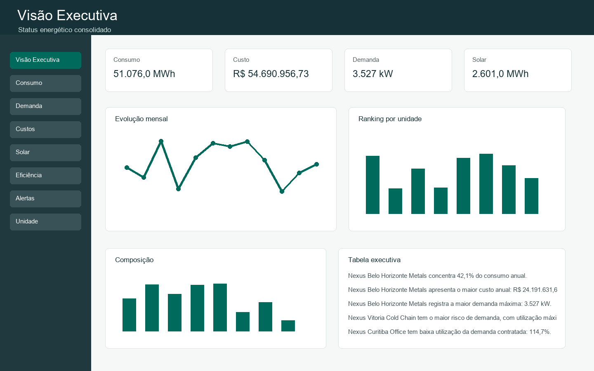
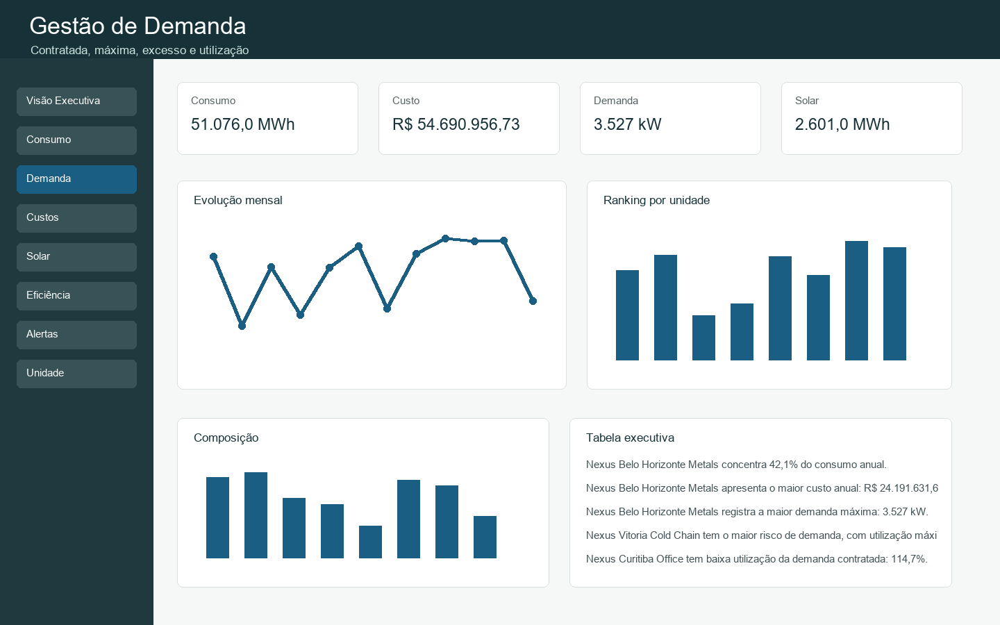
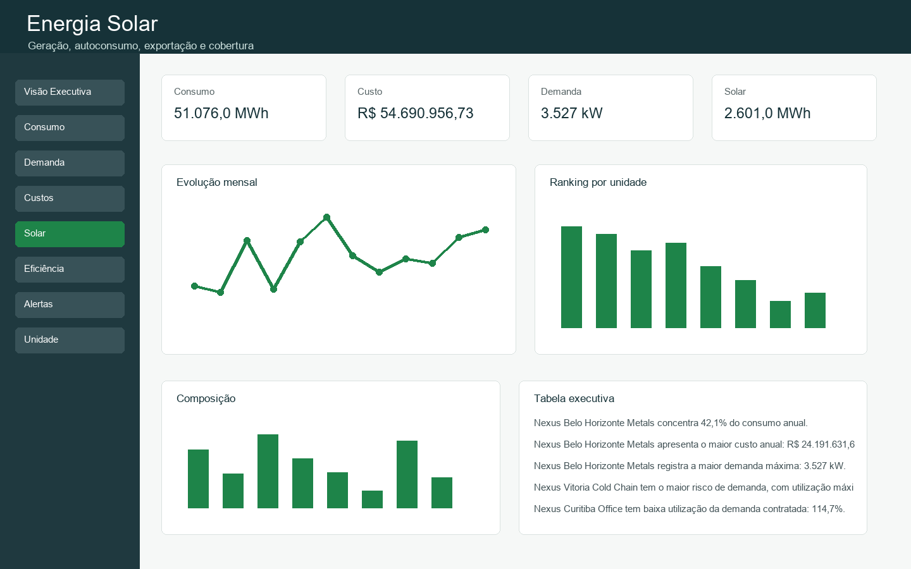

Registros horários315.360
Consumo total51.076,0 MWh
Custo totalR$ 54.690.956,73
Prévia do dashboard



Insights
- Nexus Belo Horizonte Metals concentra 42,1% do consumo anual.
- Nexus Belo Horizonte Metals apresenta o maior custo anual: R$ 24.191.631,61.
- Nexus Belo Horizonte Metals registra a maior demanda máxima: 3.527 kW.
- Nexus Vitoria Cold Chain tem o maior risco de demanda, com utilização máxima de 229,9%.
- Nexus Curitiba Office tem baixa utilização da demanda contratada: 114,7%.
- Nexus Curitiba Office possui o menor fator de carga: 0.36.
- A geração solar total foi de 2.601,0 MWh, sem geração noturna no modelo.
- A cobertura solar do portfólio foi de 5,1%.